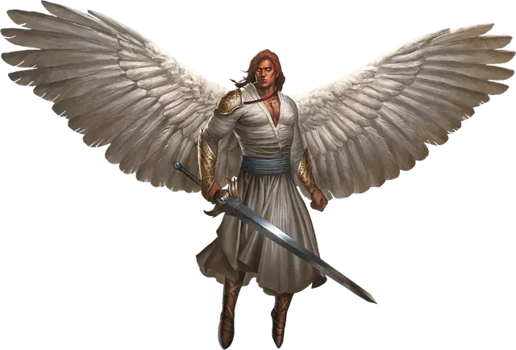

Солар
Solar
Большой Небожитель, законно-добрый

Класс Доспеха 21 (природный доспех)
Хиты 243 (18к10 + 144)
Скорость 50 футов, летая 150 футов
| мод | спас | ||
|---|---|---|---|
| СИЛ | 26 | +8 | +8 |
| ЛОВ | 22 | +6 | +6 |
| ТЕЛ | 26 | +8 | +8 |
| мод | спас | ||
|---|---|---|---|
| ИНТ | 25 | +7 | +14 |
| МДР | 25 | +7 | +14 |
| ХАР | 30 | +10 | +17 |
Навыки Восприятие +14
Сопротивление урону излучение; дробящий, колющий, рубящий от немагических атак
Иммунитет к урону некротическая энергия, яд
Иммунитет к состояниям отравление, очарование, истощение, испуг
Чувства истинное зрение 120 футов, пассивное Восприятие 24
Языки Все, Телепатия 120 фт.
Опасность 21 (33000 опыта)
Бонус мастерства +7
Особенности
Оружие ангела. Атаки оружием солара являются магическими. Если солар попадает любым оружием, оно причиняет дополнительный урон излучением 6к8 (уже включено в атаку).
Божественная осведомленность. Солар знает, когда слышит ложь.
Врождённое колдовство. Базовой характеристикой солара является Харизма (Сл спасброска от заклинания 25). Он может накладывать следующие заклинания, не нуждаясь в материальных компонентах:
• Неограниченно: невидимость [invisibility] (только на себя), обнаружение зла и добра [detect evil and good];
• 3/день каждое: воскрешение [resurrection], рассеивание зла и добра [dispel evil and good], стена клинков [blade barrier];
• 1/день каждое: власть над погодой [control weather], общение [commune].
Сопротивление магии. Солар совершает с преимуществом спасброски от заклинаний и прочих магических эффектов.
Действия
Мультиатака. Солар совершает две атаки двуручным мечом.
Двуручный меч. Рукопашная атака оружием: +15 к попаданию, досягаемость 5 футов, одна цель. Попадание: 22 (4к6 + 8) рубящего урона плюс 27 (6к8) урона излучением.
Убийственный лук. Дальнобойная атака оружием: +13 к попаданию, дистанция 150/600 футов, одна цель. Попадание: 15 (2к8 + 6) колющего урона плюс 27 (6к8) урона излучением. Если цель — существо с количеством хитов 100 или меньше, она должна преуспеть в спасброске Телосложения Сл 15, иначе умрёт.
Летающий меч. Солар отпускает свой двуручный меч в магическое парение в свободном пространстве в пределах 5 футов от себя. Если солар видит меч, он может мысленно бонусным действием отдать ему команду пролететь до 50 футов и либо совершить одну атаку по цели, либо вернуться в руки солара. Если парящий меч становится целью любого эффекта, считается, что солар его держит. Парящий меч падает, если солар умирает.
Целебное касание (4/день). Солар прикасается к другому существу. Цель магическим образом восстанавливает 40 (8к8 + 4) хитов и избавляется от проклятий, болезней, отравлений, слепоты и глухоты.
Легендарные действия
Солар может совершить 3 легендарных действия, выбирая из представленных ниже вариантов. За один раз можно использовать только одно легендарное действие, и только в конце хода другого существа. Солар восстанавливает использованные легендарные действия в начале своего хода.
Телепортация. Солар магическим образом телепортируется вместе со всем несомым и носимым снаряжением, на расстояние до 120 футов в свободное пространство, которое он видит.
Опаляющая вспышка (стоит 2 действия). Солар излучает магическую, божественную энергию. Все выбранные им существа в пределах 10 футов должны совершить спасбросок Ловкости Сл 23, получая при провале 14 (4к6) урона огнём плюс 14 (4к6) урона излучением, или половину этого урона при успехе.
Ослепляющий взор (стоит 3 действия). Солар нацеливается на одно существо, которое видит в пределах 30 футов от себя. Если цель видит его, она должна преуспеть в спасброске Телосложения Сл 15, иначе она станет ослепленной, пока слепота не будет снята магией, такой как малое восстановление.
Описание
Солар подобен богу по своей славе и силе. Меч солара самостоятельно летает по полю боя, а одна-единственная стрела из его лука может запросто убить цель. Настолько велика мощь солара, что даже демонические князья содрогаются от его звучных команд.
Говорят, что существует всего двадцать четыре солара. Известно, что несколько соларов являются верными помощниками некоторых богов. Остальные отдыхают в состоянии созерцания, ожидая, когда их услуги понадобятся для противостояния огромной угрозе силам добра.
См. дополнительно статью: «Бестиарий: Ангелы»